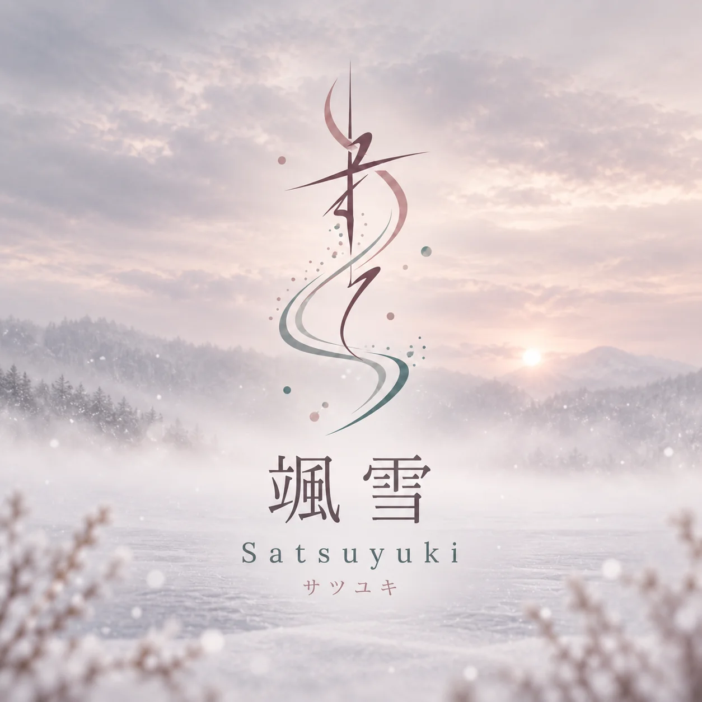
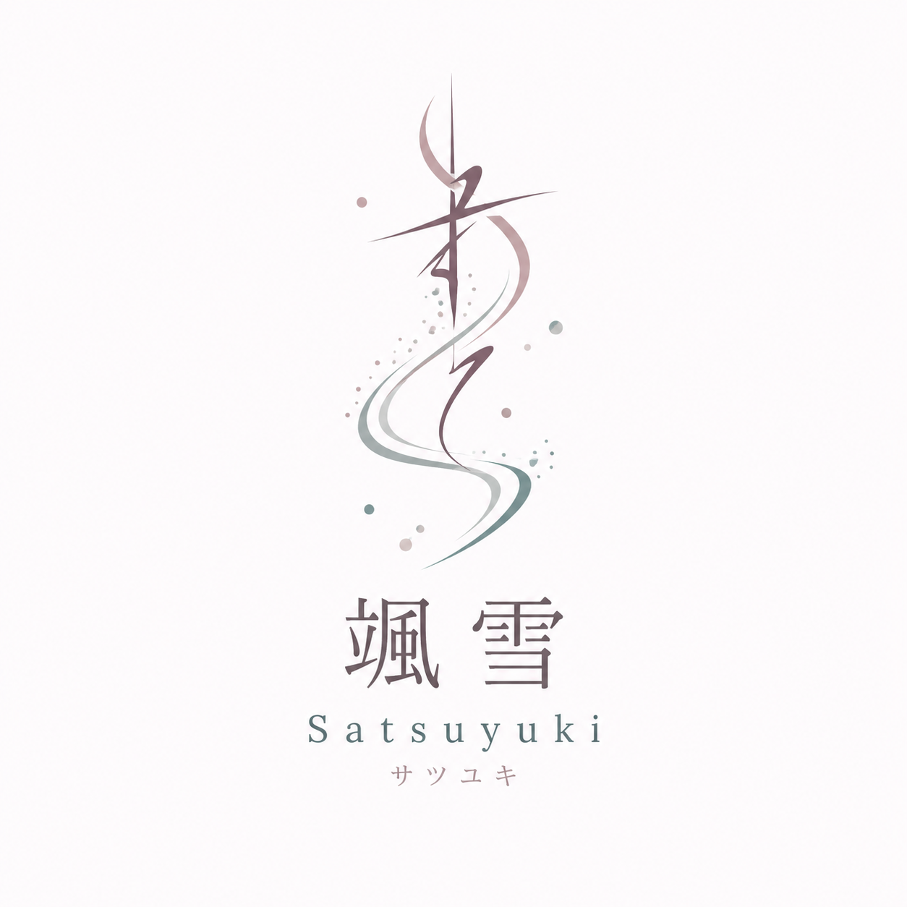

01 / BRAND & WEB颯雪
颯雪
Satsuyuki.
讓滑雪不只是一堂課，而是一段可以從容開始的旅程。
角色品牌企劃 · 內容架構 · 網站製作
主題女性友善滑雪學習體驗
階段2026／27 品牌建置

THE STORY / 01
先把「安心」
說成能被感受到的事。
第一次滑雪的人，常同時面對裝備、語言、雪場與技術上的未知。颯雪以越後湯澤／岩原為主要情境，把這些問題放在教學之前一起思考。
網站從品牌理念、學習方式、課程到人物介紹拆成獨立頁面；內容不是堆砌資訊，而是讓訪客一步步理解：她會和誰學、會怎麼開始、下一步是什麼。

01品牌語氣
以平靜而具體的文字談安全、節奏與陪伴。
02資訊設計
讓課程、教學流程與洽詢入口各有清楚位置。
03視覺一致
沿用品牌 Logo、雪景與指定色系，串連各頁體驗。